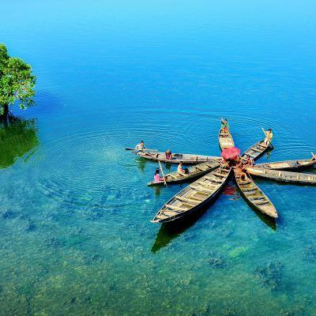
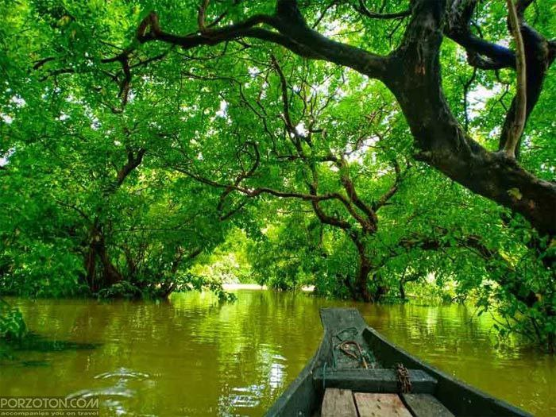
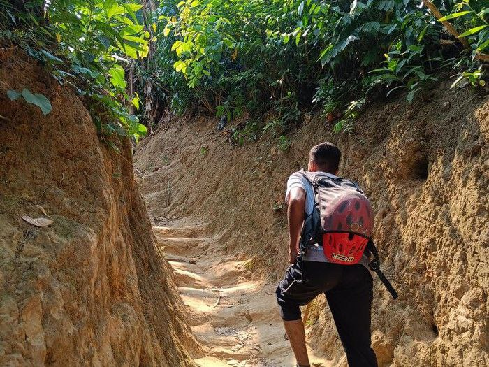

About Sylhet
Sylhet is known for its highlands, swamp forests, and haors. The breath-taking beauty of Sylhet's green surroundings and the welcoming nature of its locality is sheerly irresistible — in very few places in Bangladesh, you will find the mesmerising hillside beauty that Sylhet possesses.
Popular Tours
-

Tanguar Haor
Tangoar Haor, which is a crucial hub for biodiversity, is home to a diverse range of birds. In winter, numerous migratory birds join the local birds giving rise to an eye-soothing abundance of fauna. There are a total of 51 species of birds. Besides rare species of Palace eagles and large grey king storks from among the migratory birds, the swampland is inhabited by numerous local species of birds including vultures, seagulls and cranes in addition to six species of mammals, four species of snakes, six species of turtles, seven species of lizards as well as rare species of amphibians.
-

Ratargul Swamp Forest
A dense forest comprising mostly native hijol and koroch trees, Ratargul offers a sanctuary for different species of birds, monkeys, snakes and other reptiles.Ratargul is in close proximity of three rivers. Flowing respectively from the south and the east, the Chenger Khal and the Kafna meet near Ratargul and head north towards Guainghat under the nomenclature Guain. Once upon a time, the swamp forest occupied the banks of all these rivers. The water of these rivers makes its way into the forest and leaves it marooned under 15 to 20 feet water in the rainy season. With the bottom half of the dense forest covered under water and the top half visible with its multitudes of shades falling on crystal-clear water underneath, Ratargul makes for a sight that can soothe even the most uninterested of eyes.
-

Hiking
Sylhet, a paradise for nature enthusiasts!Explore the enchanting trails, immerse yourself in the beauty of the tea gardens, and witness the majestic waterfalls. An unforgettable hiking experience awaits you in Sylhet!